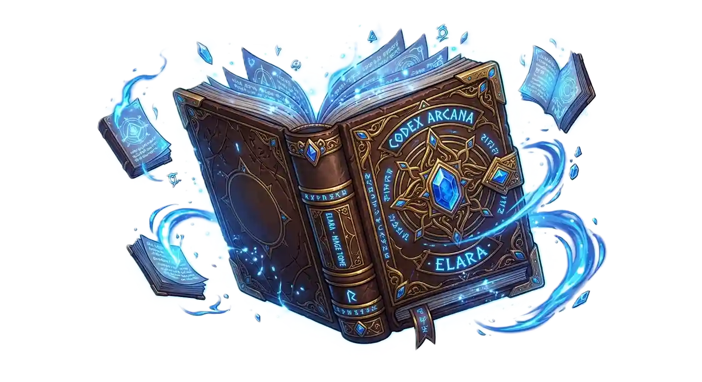

分類帽用 CSS 疊眼睛/眉毛/嘴巴做表情；魔導書目前只有「動作＋光影」沒有臉。 這頁把幾種畫臉的方式放在一起比，並可用滑桿即時調整五官位置。 重點是看最下方的「實際尺寸預覽」——遊戲裡首頁只有約 100px，臉太細緻會糊掉。

61px 是修好前的首頁尺寸（被 menu.css 蓋掉）；100px 是修好後 1366×768 的首頁尺寸； 124px 是 1920×1080 首頁；200px 是劇情畫面。